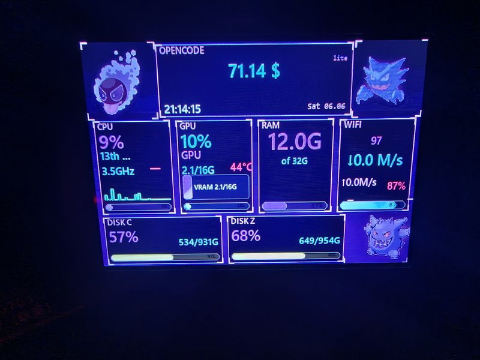
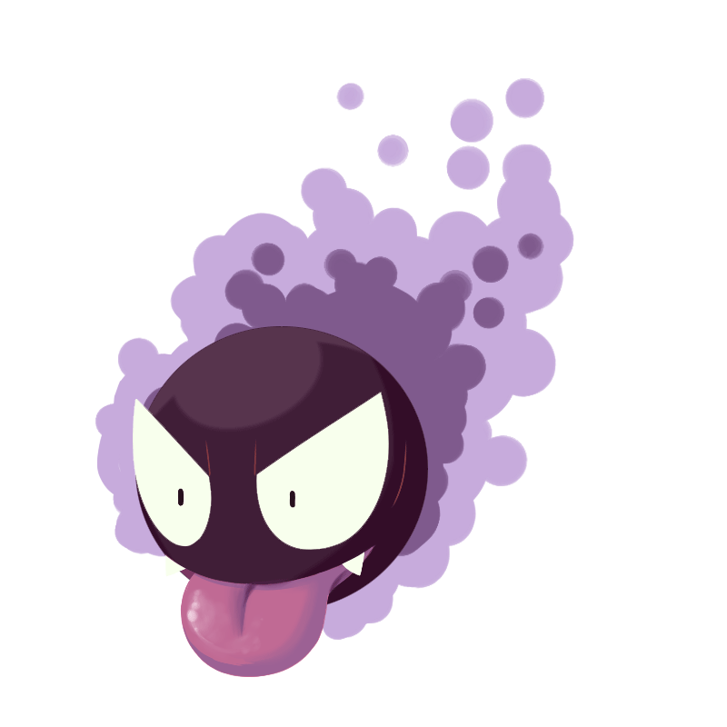
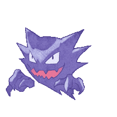
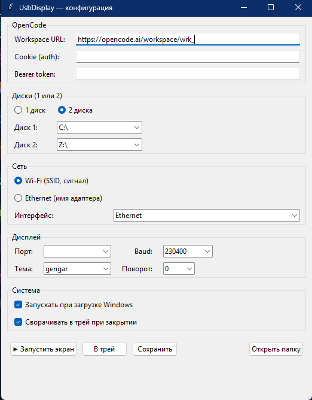
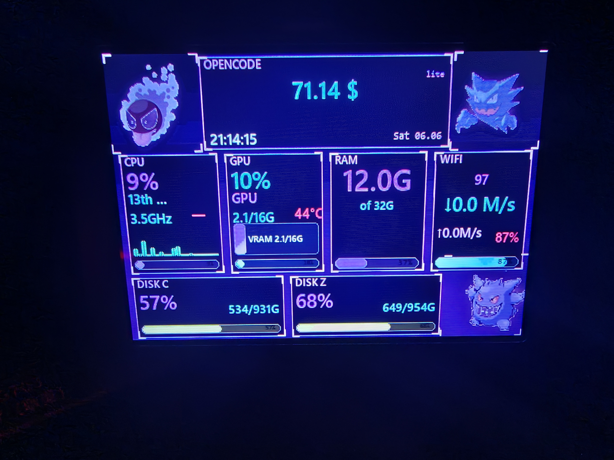

3.5″ USB TURING SMART SCREEN · 480×320 · CH340


Gastly

Haunter

Gengar
Превращает 3.5″ USB Turing Smart Screen в живую панель мониторинга: CPU per-core, GPU, RAM, сеть, диски, OpenCode — с покемонами в углах.
⬇ Скачать .exe 📖 Документация


3 анимированных GIF покемонов в углах, неоновый UI с glow, частицами и кастомными панелями. Pre-render статики для скорости.
На CH340@230400 обновляются только изменившиеся регионы: round-robin GIF + стат-панели. Цикл 3 углов ≈ 2.6 с.
CPU (per-core bars), GPU (VRAM, temp, power), RAM, Wi-Fi/Ethernet (SSID, signal, ↓↑ MB/s), 1–2 диска, hostname, время.
Баланс, план (lite/free), использование месяца. Cookie или Bearer token. Кеш 60 с. URL задаётся в GUI.
Все настройки в одном окне: OpenCode, диски, WiFi/Ethernet, COM-порт, baud, тема, поворот, автозапуск, трей. Встроено в Python.
При закрытии сворачивается в трей. Контекст-меню: «Показать окно» / «Выход». Иконка генерируется на лету.
Чекбокс в GUI → запись в HKCU\…\Run через pythonw.exe app.py --autostart. Без внешних утилит.
При зависании дисплея: software reset (cmd=101) → DTR-пульс → долгое ожидание USB re-enumerate. 3-шаговый fallback.
PyInstaller onefile, ~9 MB. Кладёшь в любую папку, запускаешь. Никаких pip install для пользователя.
115200 / 230400 baud — стабильно. 460800 / 921600 — зашумит или зависнет прошивка дисплея. Это документировано в коде.
Опциональное окно для отладки: видно то, что уходит на дисплей, без подключения экрана. Удобно для разработки тем.
Запуск из терминала с флагами: --reset, --rotate, --theme, --no-preview. Удобно для скриптов и CI.


# protocol/turing.py — 6-байтный заголовок def pack_cmd(x, y, ex, ey, cmd): return bytes([ (x >> 2) & 0xFF, (((x & 3) << 6) + (y >> 4)) & 0xFF, (((y & 15) << 4) + (ex >> 6)) & 0xFF, (((ex & 63) << 2) + (ey >> 8)) & 0xFF, ey & 0xFF, cmd & 0xFF, ]) # main.py — partial update regions = theme.dirty_regions(snap) for r in regions: _, _key, x, y, w, h = r d.send_region(img, x, y, w, h) theme.mark_sent(r) # autostart.py — registry winreg.SetValueEx(key, "UsbDisplay", 0, REG_SZ, f'"{pythonw}" "{app_py}" --autostart')
# 1. Скачай .exe или собери из исходников git clone https://github.com/<user>/UsbDisplay.git cd UsbDisplay pip install -r requirements.txt # 2. Запусти python app.py # или CLI-вариант: python main.py --reset --theme neon_gengar --no-preview --rotate 0 # 3. Собери свой .exe pip install pyinstaller pyinstaller --onefile --windowed --name UsbDisplay --add-data "gif;gif" app.py